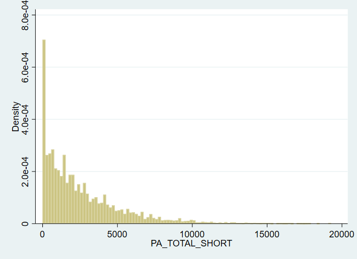
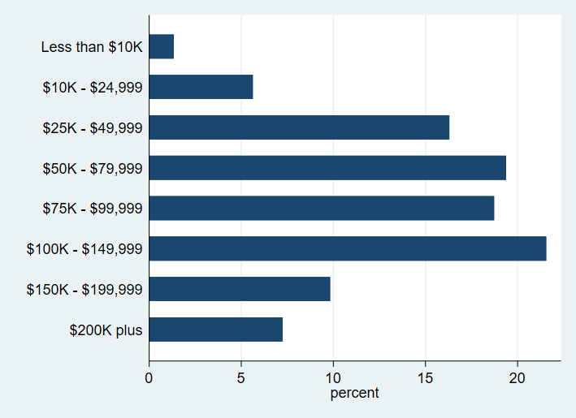
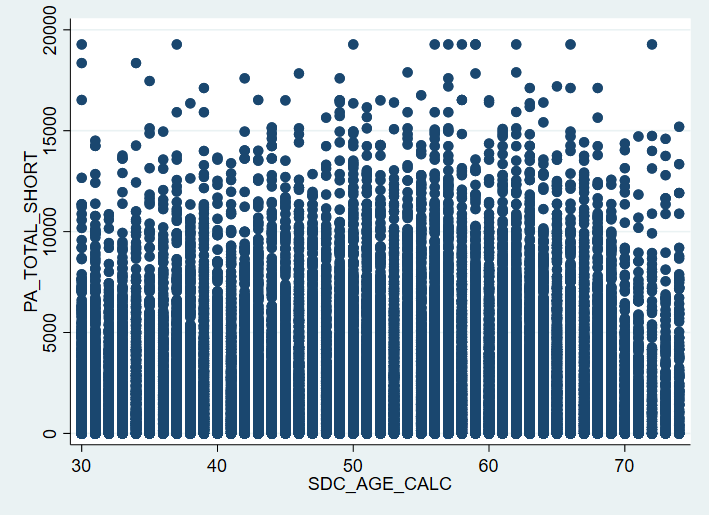
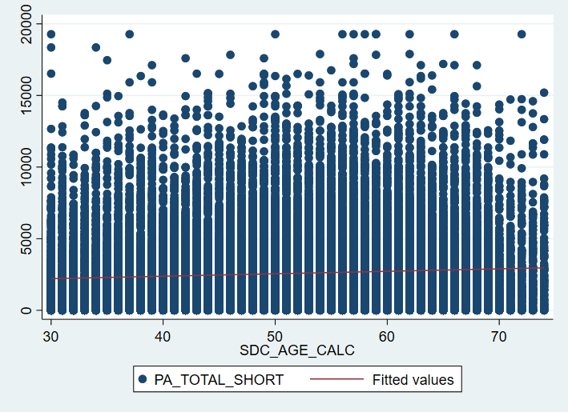
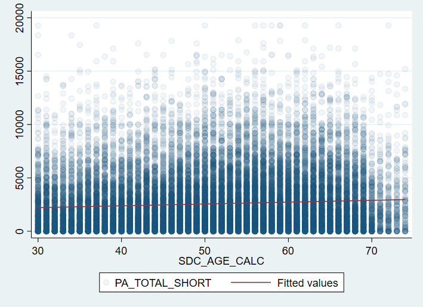
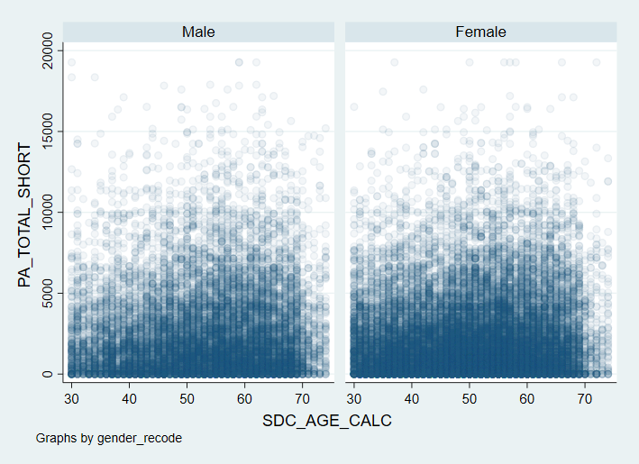
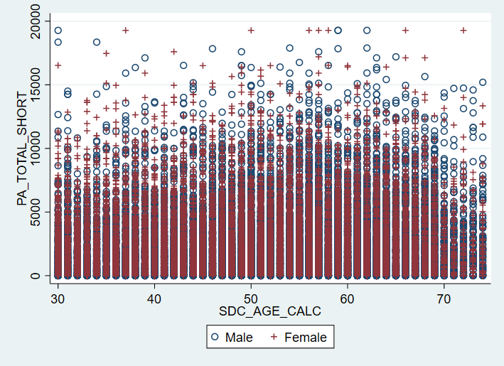

. capture log close
. log using "\\cabinet.usask.ca\work$\dlf545\My Documents\CANPTH_data_wrangling_log", replace
--------------------------------------------------------------------------------------------------------------------------
name: <unnamed>
log: \\cabinet.usask.ca\work$\dlf545\My Documents\CANPTH_data_wrangling_log.smcl
log type: smcl
opened on: 18 Jan 2023, 10:43:12
.
. clear all
. set more off
. import delimited "\\cabinet.usask.ca\work$\dlf545\My Documents\Data.csv", numericcols(_all) clear
(encoding automatically selected: ISO-8859-1)
(440 vars, 41,187 obs)
In general data visualization is going to be less powerful in Stata compared to R. That said, there is a lot we can with data viz in Stata. As well, there are some decent tutorials and things out there for stata graphics. Here are two good ones.
UCLA Statistical Methods and Data Analytics - Stata Support -
Unlike ggplot2 there is no consistent command for the different plots. We are just going to have to memorize them. All good.
Histograms
. histogram pa_total_short
(bin=45, start=0, width=428.4)
We can visually inspect the plot and change the binwidth. Most of the time you won’t need to do this.
. histogram pa_total_short, bin(100) name(histo_pa, replace)
(bin=100, start=0, width=192.78)

Single Bar Graph
People get stuck in Stata making bar graphs because they are used to Excel and only have the mean value for a given column then making a bar graph from that mean column. It’s always questionnable whether you should be making a bar graph, but if you really need to you can in Stata.
First lets create labels for our income variable
. table sdc_income
-----------------------
| Frequency
-----------+-----------
SDC_INCOME |
1 | 472
2 | 1,985
3 | 5,745
4 | 6,831
5 | 6,602
6 | 7,600
7 | 3,463
8 | 2,555
Total | 35,253
-----------------------
. generate income_recode = sdc_income
(5,934 missing values generated)
. recode income_recode (1 = 0) (2 = 1) (3 = 2) (4 = 3) (5 = 4) (6 = 5) (7 = 6) (8 = 7)
(35253 changes made to income_recode)
. label define income_recode 0 "Less than $10K" 1 "$10K - $24,999" 2 "$25K - $49,999" 3 "$50K - $79,999" 4 "$75K - $99,999
> " 5 "$100K - $149,999" 6 "$150K - $199,999" 7 "$200K plus"
. label values income_recode income_recode
. tab income_recode
income_recode | Freq. Percent Cum.
-----------------+-----------------------------------
Less than $10K | 472 1.34 1.34
$10K - $24,999 | 1,985 5.63 6.97
$25K - $49,999 | 5,745 16.30 23.27
$50K - $79,999 | 6,831 19.38 42.64
$75K - $99,999 | 6,602 18.73 61.37
$100K - $149,999 | 7,600 21.56 82.93
$150K - $199,999 | 3,463 9.82 92.75
$200K plus | 2,555 7.25 100.00
-----------------+-----------------------------------
Total | 35,253 100.00
Single Bar Graph
. graph hbar, over(income_recode) name(bar_income, replace)

Here we can use bar or hbar to define a vertial or horizontal bar plot, respectively.
**Single variable boxplot
. graph box pa_total_short, name(box_pa, replace)
Scatter plots show the relationship between two variables. There are lots of things we can do and we will build a plot sequentially. We are going to plot the relationship between age and physical activity, two continuous variables.
. graph twoway scatter pa_total_short sdc_age_calc, name(scatter_pa_age, replace)

Let’s add a fitted line. By default Stata uses a linear regression. This is not the same as R. I think a line is a better default but that’s me. Here we are combining graphs sort of like we did with ggplot2. We use brackets to call two plots and overlay them.
. graph twoway (scatter pa_total_short sdc_age_calc) (lfit pa_total_short sdc_age_calc), name(scatter_fit, replace)

We still have a problem with overplotting. We can use mcolour to change the opacity of the colours.
. graph twoway (scatter pa_total_short sdc_age_calc, mcolor(%5)) (lfit pa_total_short sdc_age_calc), name(scatter_colour,
> replace)

We can pretty easily group by for different variables in stata graphics. Here we are going to group by using gender. First let’s add value labels to our gender variable.
. generate gender_recode = sdc_gender
. recode gender_recode (1 = 0) (2 = 1)
(41187 changes made to gender_recode)
. label define gender_recode 0 "Male" 1 "Female"
. label values gender_recode gender_recode
. tab gender_recode
gender_reco |
de | Freq. Percent Cum.
------------+-----------------------------------
Male | 15,200 36.90 36.90
Female | 25,987 63.10 100.00
------------+-----------------------------------
Total | 41,187 100.00
**Faceting by gender
. graph twoway scatter pa_total_short sdc_age_calc, by(gender_recode) mcolor(%5) name(scatter_gender_facet, replace)

Colour by gender
There is no default way in Stata to colour by a variable in a scatter plot. There is a community develop method in a package called SCC. This is a community written program like an R package. There are more and more of these in Stata, which is great. We need to install this. From what I can tell
ssc install sepscatter
. sepscatter pa_total_short sdc_age_calc, separate(gender_recode) name(scatter_gender_colour, replace)
